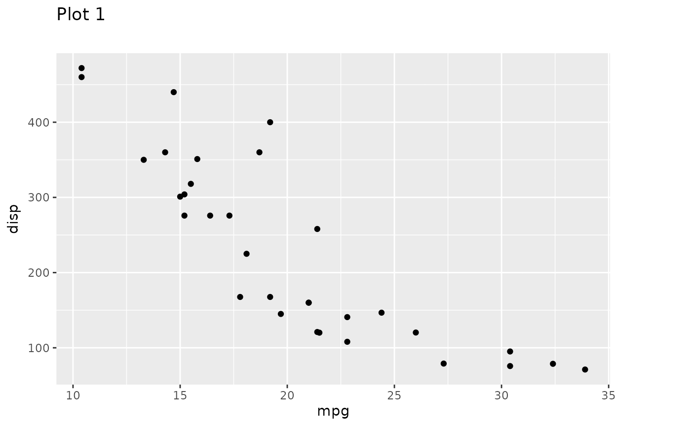

While patchwork is mainly a package for creating plot compositions, it also contains infrastructure for a related, but distinct task: Aligning plots across pages.
Consider the task where you are preparing a slideshow containing a range of figures. Optimally you’d want plots that don’t “jump around” as you switch between slides, but different axis text, legends, strips, etc. can make that difficult. We’ll illustrate this with our standard plots:
library(ggplot2)
p1 <- ggplot(mtcars) +
geom_point(aes(mpg, disp)) +
ggtitle('Plot 1')
p2 <- ggplot(mtcars) +
geom_boxplot(aes(gear, disp, group = gear)) +
ggtitle('Plot 2')
p3 <- ggplot(mtcars) +
geom_point(aes(hp, wt, colour = mpg)) +
ggtitle('Plot 3')
p4 <- ggplot(mtcars) +
geom_bar(aes(gear)) +
facet_wrap(~cyl) +
ggtitle('Plot 4')Notice how p1 and p3 doesn’t align when rendered at the same size:

We can make one of the plots align with the other by extracting the dimensions from one plot, and applying it to the other:

A nice thing about the implementation is that aligned plots retain the ggplot nature after the dimensions have been applied, and can thus continue to be added to:

Often we don’t have a single plot that everything else should be aligned to. Notice the havoc we wreck when we try to align p4 to p3:

Because p3 doesn’t have any strips the title on p4 will be placed too close to them in order to be aligned with the title of p3. What we want is to extract some dimensions that are large enough to accommodate all the different features in a set of plots. We can do just that with get_max_dim():
We can now see that the title in the other plots have been raised to make room for the strips present in p4:

Usually you’ll have a list of plots and simply want to align all of these before rendering them to a file. All of the operations above have been wrapped in the align_plots() function:

Want more?
Multipage alignment is just a small part of patchwork. Check out the other guides to learn about assembling plots, specifying layouts, and annotating the results.